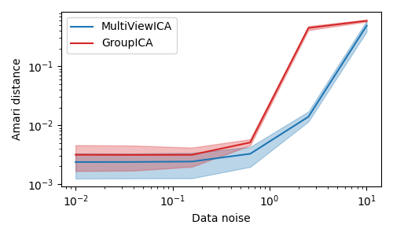

Note
Click here to download the full example code
Multiview Independent Component Analysis (ICA) Comparison¶
Adopted from the code at `https://github.com/hugorichard/multiviewica`_ and their tutorial written by Hugo Richard and Pierre Ablin.
Two multiview ICA algorithms are compared. GroupICA concatenates the individual views prior to dimensionality reduction and running ICA over the result. MultiviewICA performs better by optimizing the set of mixing matrices relative to the average source signal.
# Authors: Hugo Richard, Pierre Ablin
# License: BSD 3 clause
import numpy as np
import matplotlib.pyplot as plt
from mvlearn.decomposition import MultiviewICA, GroupICA
# sigmas: data noise
# m: number of subjects
# k: number of components
# n: number of samples
sigmas = np.logspace(-2, 1, 6)
n_seeds = 3
m, k, n = 5, 3, 1000
cm = plt.cm.tab20
algos = [
("MultiViewICA", cm(0), MultiviewICA),
("GroupICA", cm(6), GroupICA),
]
def amari_d(W, A):
P = np.dot(A, W)
def s(r):
return np.sum(np.sum(r ** 2, axis=1) / np.max(r ** 2, axis=1) - 1)
return (s(np.abs(P.T)) + s(np.abs(P))) / (2 * P.shape[1])
plots = []
for name, color, algo in algos:
means = []
lows = []
highs = []
for sigma in sigmas:
dists = []
for seed in range(n_seeds):
rng = np.random.RandomState(seed)
S_true = rng.laplace(size=(n, k))
A_list = rng.randn(m, k, k)
noises = rng.randn(m, n, k)
Xs = np.array([S_true.dot(A) for A in A_list])
Xs += [sigma * N.dot(A) for A, N in zip(A_list, noises)]
if name == 'MultiViewICA':
ica = algo(tol=1e-4, max_iter=1000, random_state=0).fit(Xs)
elif name == 'GroupICA':
ica = algo(ica_kwargs={'tol': 1e-4}, random_state=0).fit(Xs)
W = ica.individual_components_
dist = np.mean([amari_d(W[i].T, A_list[i]) for i in range(m)])
dists.append(dist)
dists = np.array(dists)
mean = np.mean(dists)
low = np.quantile(dists, 0.1)
high = np.quantile(dists, 0.9)
means.append(mean)
lows.append(low)
highs.append(high)
lows = np.array(lows)
highs = np.array(highs)
means = np.array(means)
plots.append((highs, lows, means))
fig = plt.figure(figsize=(5, 3))
for i, (name, color, algo) in enumerate(algos):
highs, lows, means = plots[i]
plt.fill_between(
sigmas, lows, highs, color=color, alpha=0.3,
)
plt.loglog(
sigmas, means, label=name, color=color,
)
plt.legend()
x_ = plt.xlabel(r"Data noise")
y_ = plt.ylabel(r"Amari distance")
fig.tight_layout()
plt.show()
# MultiviewICA has the best performance (lowest Amari distance).
Total running time of the script: ( 0 minutes 8.921 seconds)